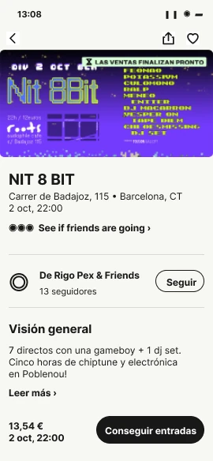

Screens exported from my Figma prototype.
Academic project / UOC / 2026
Eventbrite: event discovery
An interactive prototype inspired by Eventbrite, built around finding an event and returning to it later.
My contribution
I designed the screens and the interactive flow in Figma, with a soft colour palette and reusable interface components.
The flow
- Browse event cards on the Discover screen.
- Open filters and explore an event’s details.
- Save favourites and return to the event list.
Academic design exercise. This is a student prototype inspired by Eventbrite, not commissioned work for the company.